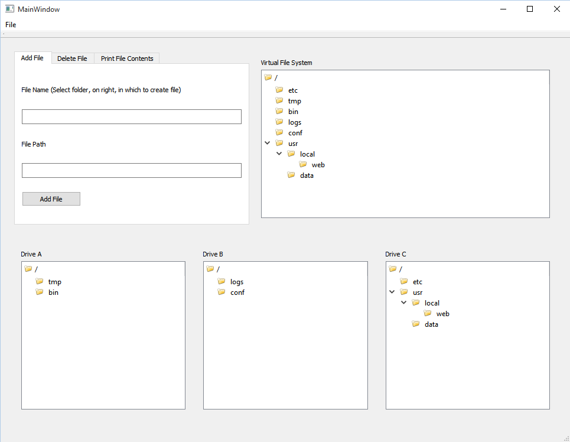
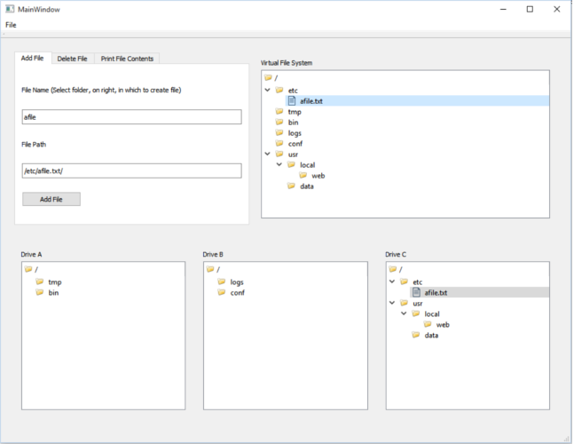
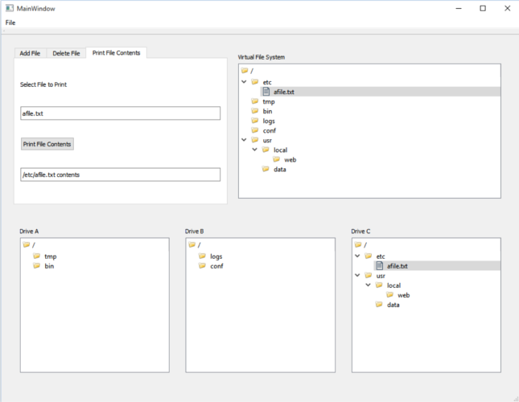
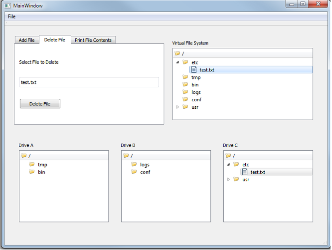
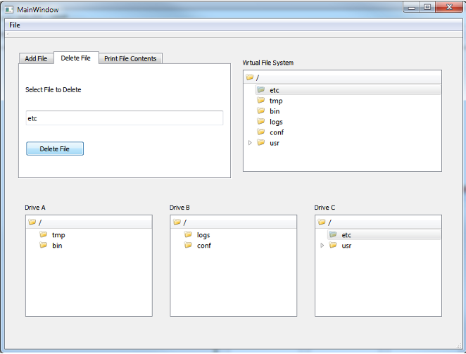

GUI Display
The above screen shows the GUI view, when the application is initially started. The main GUI window is comprised of five sections.
Add New File
The above screenshot shows the add file feature of the application. A user selects the directory in which a file is to be added, types the file name in the name field and then clicks the "Add File" button. The file will then be added to the chosen vfs directory and included in the actual physical directory, below.
Print File Contents
The above screenshot shows the print file feature of the application. A file is selected by the user, via the Virtual File System display. Once chosen, the file name will appear on the left. Clicking the "Print File Contents" button, will display the file's contents in the below text section
Delete File
 The sreenshots above shows the application's delete file feature. As with the other operations, the user selects the file using the Virtual File System tree view. Once selected, the file can be deleted using the "Delete File" button.